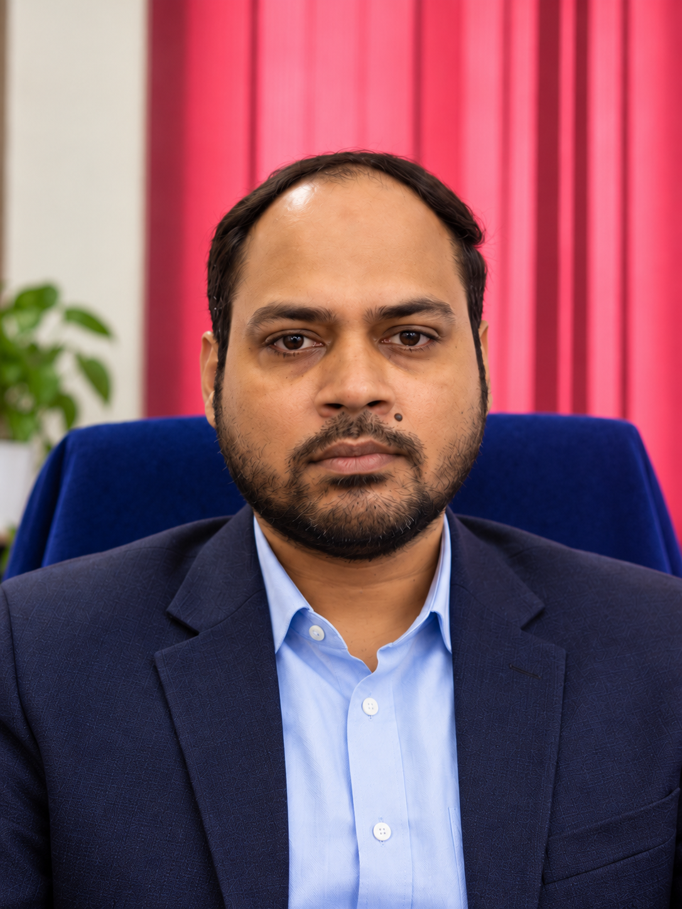

Associate Professor · Indian Statistical Institute, Kolkata
September 2026 – present
I am a quantum information theorist. My research develops information-theoretic foundations for quantum communication, quantum statistical inference, and the learning and privacy of quantum systems.

My work is rooted in quantum information theory. Across communication, inference, and learning, I use tools from information theory, quantum statistics, and mathematical analysis to understand fundamental limits on processing information in quantum systems.
One-shot and asymptotic limits of quantum communication, quantum channels and networks, hypothesis testing, and communication under uncertainty.
Explore this direction →Quantum prediction, unbiased estimation of nonlinear functionals, quantum U-statistics, and Cramér–Rao efficiency.
Explore this direction →Information-theoretic generalization bounds, Rényi-divergence methods, private learning, and information ordering.
Explore this direction →Principal Investigator · DST, Government of India · National Quantum Mission · 2026–2028
Principal Investigator · ANRF · ARG Grant · 2026–2028
Principal Investigator · DST, Government of India · MATRICS Grant · 2023–2025
Recipient of the TCS Research Fellowship. Working with me since August 2023.
Joined the research group in July 2026.
Working under my supervision on his M.Tech. Computer Science thesis.
I am looking to recruit postdoctoral researchers to work on problems at the intersection of quantum information theory and quantum learning.
I am looking for motivated Ph.D. students interested in research at the intersection of quantum information theory and quantum learning. Ph.D. students will be fully funded through the Anusandhan National Research Foundation (ANRF) ARG grant.
September 2026 – present
July 2020 – August 2026
July 2017 – December 2019
June 2016 – July 2017
May 2016 – May 2018
June 2015 – April 2016
September 2007 – July 2009
Doctoral advisors: Prof. Jaikumar Radhakrishnan and Prof. Pranab Sen.
Thesis: One-shot bounds in classical and quantum information theory.
I regularly teach the following courses at the Indian Statistical Institute:
naqueebwarsi [AT] isical [DOT] in
9th Floor, S N Bose Bhavan
Electronics and Communication Sciences Unit · Indian Statistical Institute, Kolkata–700108, India